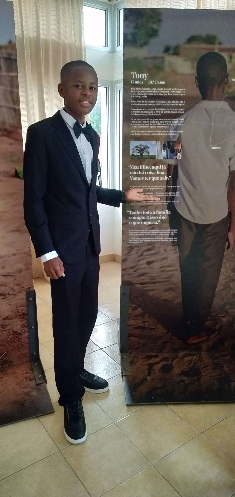

Mussagi Fernando Omuge
Nasci no dia 18 de Junho de 2008 em Pemba, Província de Cabo Delgado, filho de Fernando Omuge e Arminda de Fátima Arcanjo.
Sou uma pessoa dedicada, curiosa e comprometida com o desenvolvimento comunitário, a participação juvenil e a promoção dos direitos dos adolescentes e jovens.
Contactar
Impacto social e participação juvenil
Experiências, projectos e contribuição comunitária
Este portfólio apresenta o meu percurso académico, comunitário e social, reunindo experiências em palestras, debates, participação juvenil,
mobilização social, projectos comunitários, seminários, workshops, actividades de mentoria e acções de consciencialização em diferentes bairros e instituições.
Palestras e debates
Participação juvenil
Mobilização social
Projectos comunitários
Seminários e workshops
Mentoria juvenil
Direitos humanos
Educação comunitária